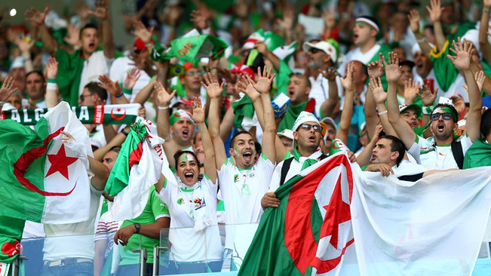

A Argélia tem uma trajetória marcada por momentos históricos na Copa do Mundo, sendo uma das seleções africanas mais competitivas do torneio. A equipe disputou várias edições do Mundial e ficou conhecida por surpreender seleções tradicionais com atuações competitivas e muita determinação. Mesmo sem chegar às fases finais, a Argélia conquistou respeito internacional ao protagonizar partidas memoráveis e representar o crescimento do futebol africano no cenário mundial. Sua participação nas Copas simboliza momentos de orgulho nacional e evolução esportiva.
Seleção
HISTÓRIA
A melhor Copa
do Mundo
Argélia
A melhor campanha da Argélia em uma Copa do Mundo aconteceu em 2014, quando a seleção alcançou as oitavas de final pela primeira vez na história. Nas oitavas, enfrentou a forte Alemanha e fez um jogo muito equilibrado, sendo eliminada apenas na prorrogação por 2 a 1. Mesmo com a derrota, a campanha ficou marcada como o maior feito da Argélia em Mundiais, consolidando a geração de 2014 como uma das mais importantes do futebol do país.
1982
A Argélia chocou o mundo ao vencer a Alemanha Ocidental por 2 a 1 em sua estreia na Copa, uma das maiores zebras da história do torneio. Apesar da campanha forte, a seleção acabou eliminada após o polêmico jogo entre Alemanha Ocidental e Áustria, conhecido como “Vergonha de Gijón”, em que o resultado favoreceu as duas equipes europeias.
2014
Naquele ano, a Argélia fez história ao alcançar as oitavas de final pela primeira vez, após uma campanha sólida na fase de grupos. A equipe empatou com a Rússia, venceu a Coreia do Sul por 4 a 2 e enfrentou a poderosa Alemanha nas oitavas, perdendo apenas na prorrogação por 2 a 1, em um jogo muito equilibrado e elogiado mundialmente.


Momentos inesquecíveis
01
Nas oitavas de final, a Argélia enfrentou a Alemanha, futura campeã do torneio, e fez um jogo muito equilibrado. A seleção segurou o empate no tempo normal e só foi derrotada por 2 a 1 na prorrogação, recebendo elogios pelo desempenho competitivo.
02
Após fazer uma boa campanha na fase de grupos, a Argélia acabou eliminada em uma partida polêmica entre Alemanha Ocidental e Áustria
03
A Argélia fez história ao chegar pela primeira vez às oitavas de final de uma Copa do Mundo. A equipe venceu a Coreia do Sul por 4 a 2 e empatou com a Rússia.
04
Na Copa de 1982, a Argélia surpreendeu o mundo ao derrotar a forte Alemanha Ocidental por 2 a 1 em sua estreia no torneio.
Detalhes
culturais do país